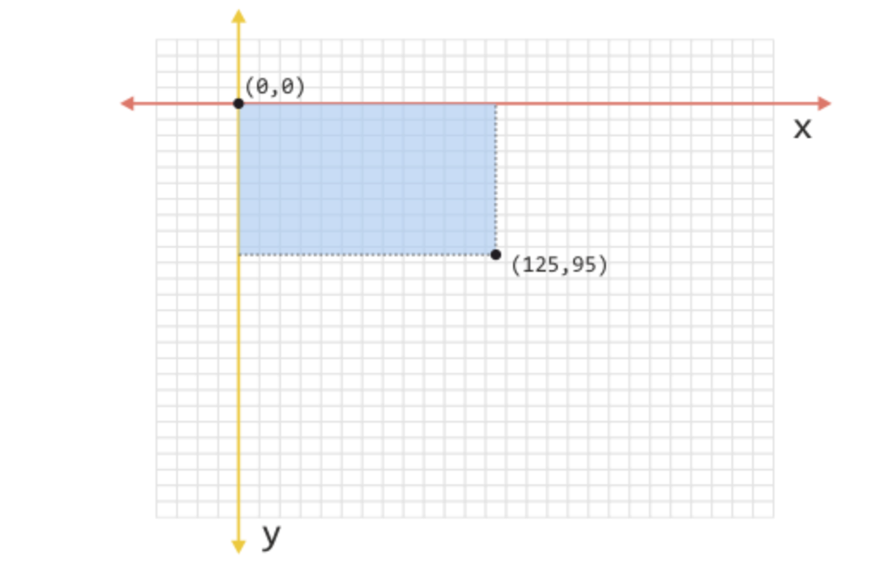
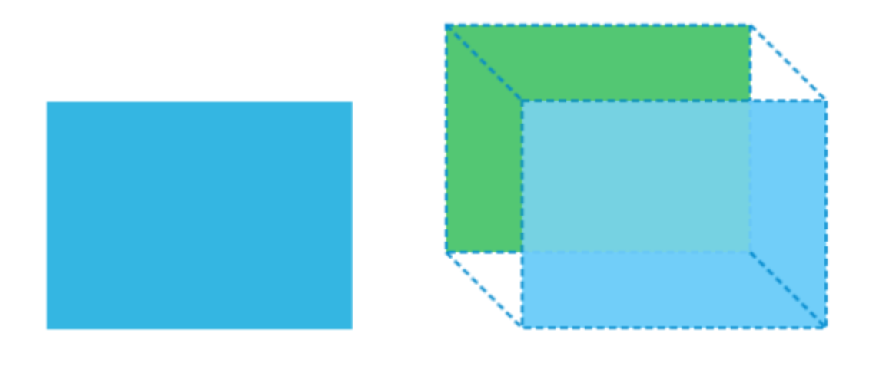

Pentru ca un element să fie mutat în raport cu poziţia sa normală, putem să folosim transformarea translate. Astfel, este suficient să folosim funcţia translate() ca să transformăm mișcarea elementului. Sintaxa acestei funcţii este următoarea:
translate(x-axis)
translate(x-axis, y-axis)
Funcţia translate() poate accepta unul sau doi parametri. Când acceptă un parametru, acesta se referă la valoarea translaţiei pe axa x. A doua valoare defineşte translaţia pe axa y. Având în vedere că este vorba de o transformare 2D, se aplică sistemul de coordonate menţionat mai sus, cu două axe, la care punctul de referinţă (punctul de origine/origin) se potriveşte cu punctul din stânga sus al elementului care se transformă
Următorul exemplu ilustrează modul în care se poate folosi transformarea CSS cu numele translate:
#transformed {
transform: translate(50px, 50px);
}

Pe lângă funcţia translate(), ca să transformăm translaţia putem să folosim şi câteva funcţii specifice, cum ar fi: